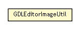

se.cambio.cds.gdl.editor.util
Class GDLEditorImageUtil

java.lang.Object
 se.cambio.cds.gdl.editor.util.GDLEditorImageUtil
se.cambio.cds.gdl.editor.util.GDLEditorImageUtil
public class GDLEditorImageUtil
- extends Object
- Author:
- icorram
| Methods inherited from class java.lang.Object |
clone, equals, finalize, getClass, hashCode, notify, notifyAll, toString, wait, wait, wait |
SAVE_ICON
public static final ImageIcon SAVE_ICON
ACCEPT_ICON
public static final ImageIcon ACCEPT_ICON
UNACCEPT_ICON
public static final ImageIcon UNACCEPT_ICON
HALF_ACCEPT_ICON
public static final ImageIcon HALF_ACCEPT_ICON
CANCEL_ICON
public static final ImageIcon CANCEL_ICON
STOP_ICON
public static final ImageIcon STOP_ICON
TEST_ICON
public static final ImageIcon TEST_ICON
CLEAR_ICON
public static final ImageIcon CLEAR_ICON
EMPTY_ICON
public static final ImageIcon EMPTY_ICON
ARROW_BACK_ICON
public static final ImageIcon ARROW_BACK_ICON
ARROW_UP_ICON
public static final ImageIcon ARROW_UP_ICON
ARROW_DOWN_ICON
public static final ImageIcon ARROW_DOWN_ICON
OBJECT_ICON
public static final ImageIcon OBJECT_ICON
FUNCTION_ICON
public static final ImageIcon FUNCTION_ICON
FOLDER_OBJECT_ICON
public static final ImageIcon FOLDER_OBJECT_ICON
FOLDER_ICON
public static final ImageIcon FOLDER_ICON
CONFIG_ICON
public static final ImageIcon CONFIG_ICON
RESTORE_ICON
public static final ImageIcon RESTORE_ICON
EXIT_ICON
public static final ImageIcon EXIT_ICON
ADD_ICON
public static final ImageIcon ADD_ICON
DELETE_ICON
public static final ImageIcon DELETE_ICON
EDIT_ICON
public static final ImageIcon EDIT_ICON
DRAG_ICON
public static final ImageIcon DRAG_ICON
EXCLAMATION_ICON
public static final ImageIcon EXCLAMATION_ICON
GREY_EXCLAMATION_ICON
public static final ImageIcon GREY_EXCLAMATION_ICON
DSL_ICON
public static final ImageIcon DSL_ICON
CALENDAR_ICON
public static final ImageIcon CALENDAR_ICON
BLUE_BULLET_ICON
public static final ImageIcon BLUE_BULLET_ICON
EXPAND_ICON
public static final ImageIcon EXPAND_ICON
CONTRACT_ICON
public static final ImageIcon CONTRACT_ICON
LIGHTNING_ICON
public static final ImageIcon LIGHTNING_ICON
SOURCE_ICON
public static final ImageIcon SOURCE_ICON
DESCRIPTION_ICON
public static final ImageIcon DESCRIPTION_ICON
HTML_ICON
public static final ImageIcon HTML_ICON
ONTOLOGY_ICON
public static final ImageIcon ONTOLOGY_ICON
ADD_ONTOLOGY_ICON
public static final ImageIcon ADD_ONTOLOGY_ICON
CONNECT_ICON
public static final ImageIcon CONNECT_ICON
GDL_ICON
public static final ImageIcon GDL_ICON
GDL_LANG_ICON
public static final ImageIcon GDL_LANG_ICON
TRANSLATE_ICON
public static final ImageIcon TRANSLATE_ICON
RULE_ICON
public static final ImageIcon RULE_ICON
ADD_RULE_ICON
public static final ImageIcon ADD_RULE_ICON
CONDITION_ICON
public static final ImageIcon CONDITION_ICON
ADD_CONDITION_ICON
public static final ImageIcon ADD_CONDITION_ICON
ACTION_ICON
public static final ImageIcon ACTION_ICON
ADD_ACTION_ICON
public static final ImageIcon ADD_ACTION_ICON
PARAMETERS_ICON
public static final ImageIcon PARAMETERS_ICON
TREATMENTS_ICON
public static final ImageIcon TREATMENTS_ICON
LOGO
public static final ImageIcon LOGO
SPLASH_IMAGE
public static final ImageIcon SPLASH_IMAGE
IMAGE_DIR
public static final String IMAGE_DIR
- See Also:
- Constant Field Values
ORIG_PARAM_IMAGE_DIR
public static final String ORIG_PARAM_IMAGE_DIR
- See Also:
- Constant Field Values
GDLEditorImageUtil
public GDLEditorImageUtil()
getIcon
public static ImageIcon getIcon(String name)
getIconOrigParam
public static ImageIcon getIconOrigParam(String name)
getImage
public static ImageIcon getImage(String name)
createBufferedImage
public static BufferedImage createBufferedImage(Image image)
getImageURL
public static URL getImageURL(String image)
getImgHTMLTag
public static String getImgHTMLTag(URL imageURL)
getImgHTMLTag
public static String getImgHTMLTag(String image)
blend
public static ImageIcon blend(ImageIcon imagen1,
ImageIcon imagen2)
Copyright © 2013 Cambio. All Rights Reserved.